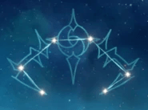

Una monja que, a parte de por su ropa, nadie diria que pertenece al clero. Su frialdad hacia todo la hace extremadamente incisiva y siempre actua en solitario.
Artefacto/s recomendados


Atq% / Maestria

Bono cryo

Prob/Daño critico
Daño/prob critica > Maestria > Atq%
Talentos
Pasivas
Constelación
Armas Recomendadas


Personajes compatibles